: Rutherford times a spin factor; nuclear size enters as
: Rutherford times a spin factor; nuclear size enters as  and proton recoil leads to Rosenbluth's formula.
and proton recoil leads to Rosenbluth's formula.Derivation
- External field
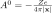
,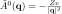
. First-order amplitude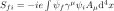
. - Energy conserved (static field),
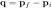
,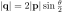
. - Cross section
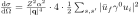
. - Trace (see traces):
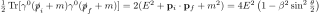
. - Combining (Mott 1929):
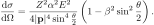
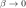
,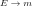
): Rutherford (Rutherford 1911). For backscattering vanishes: helicity conservation.
backscattering vanishes: helicity conservation.
Form factors and recoil
Extended charge
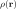
: multiply by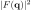
,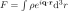
,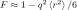
: electron scattering measures nuclear radii (Hofstadter). Scattering off a proton with recoil and magnetic moment gives the Rosenbluth formula with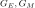
.Worked example
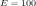
MeV electrons on gold (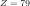
),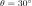
: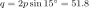
MeV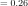
fm ;
; 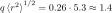
— the form factor already reduces the rate by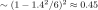
: nuclear size is visible.Engineering applications
Electron microscopy contrast (high-angle annular dark field ∝
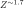
), electron-beam lithography backscatter (proximity effect), Monte Carlo transport of electrons in radiotherapy and in detectors, Rutherford backscattering spectrometry for thin-film analysis.Pitfall
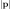
and are both needed: the relativistic Mott formula has
are both needed: the relativistic Mott formula has 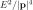
, not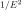
.